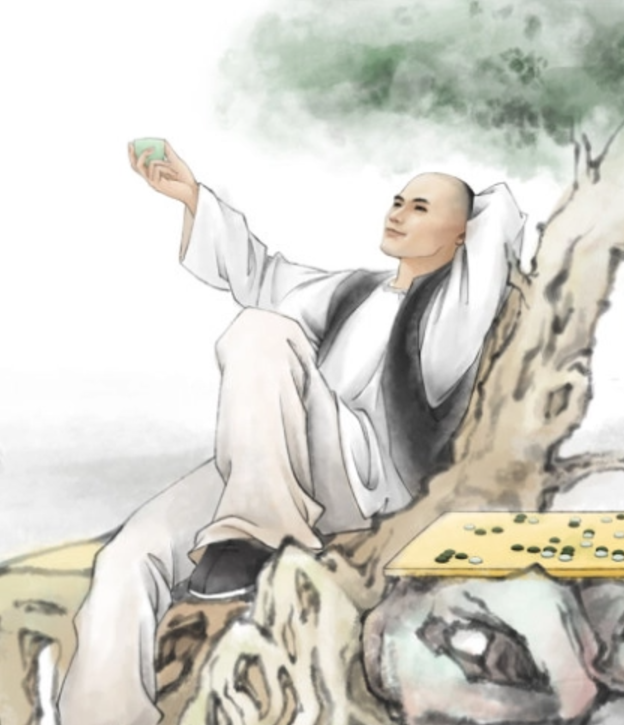
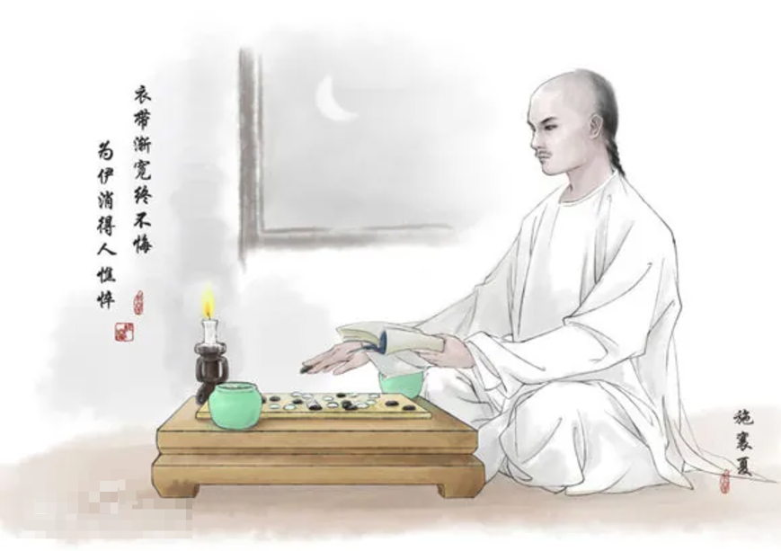
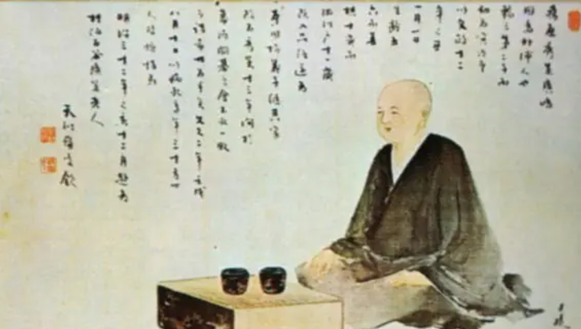

历史文化： 围棋，作为一项源远流长的智力竞技，承载着数千年的人类智慧与文化底蕴。我们将一同穿越时空，探寻围棋的起源与发展，领略其深厚的文化内涵，并聆听那些围绕着围棋展开的名人轶事。 |
| 起源与发展 |
|
围棋的起源犹如一部神秘的史诗，在历史的长河中若隐若现。据古老传说，围棋诞生于中国古代，尧帝为了教导丹朱而发明了围棋，这一传说为围棋披上了一层传奇的色彩。早在春秋战国时期，围棋已在宫廷和士大夫阶层中流行开来，《左传》中便有关于围棋的记载，这表明围棋在当时已成为人们文化生活的一部分。 |
|
随着时间的推移，围棋逐渐传播到周边国家。在魏晋南北朝时期，围棋得到了进一步的发展，成为文人雅士修身养性、展示才情的重要方式，“建安七子” 等文人集团中多有擅长围棋之人，他们留下了许多与围棋相关的诗词歌赋，从侧面反映出当时围棋的盛行。 |
 图：明皇杨妃弈棋图卷 唐 图：明皇杨妃弈棋图卷 唐 |
|
唐代，围棋迎来了它的第一个鼎盛时期。宫廷设立了棋待诏制度，专业棋手为皇室服务并相互切磋技艺。这一时期，围棋不仅在国内广泛传播，还通过遣唐使等途径传播到日本、朝鲜半岛等地，在异国他乡生根发芽。
|
 |
到了宋代，市民文化的兴起使围棋走向了更广泛的社会阶层。城市中的瓦舍勾栏里出现了专业的围棋表演和比赛，围棋成为大众娱乐的重要项目。同时，围棋理论著作也大量涌现，如《棋经十三篇》，对围棋的战略战术、棋局变化等进行了系统的总结和阐述，标志着围棋理论体系的初步形成。 图：荷亭对弈图 元 |
 图：喻兰仕女清娱图 清 图：喻兰仕女清娱图 清 |
|
明清时期，围棋继续繁荣发展，流派纷呈。如明代的永嘉派、新安派、京师派，清代的梁魏今、程兰如、范西屏、施襄夏等 “清代四大国手”，他们的棋艺精湛，风格各异，将围棋艺术推向了一个新的高峰。 |
|
在近代，日本围棋在明治维新后迅速崛起，通过对传统围棋的改革和创新，形成了现代围棋的规则体系，并培养出众多顶尖棋手，在世界围棋界占据领先地位。随后，韩国围棋也异军突起，与中日形成了围棋界的 “三国鼎立” 局面，共同推动着围棋运动在全球的发展。 在漫长的历史演变过程中，围棋的棋盘、棋子、规则等方面也发生了诸多变化。从最初的纵横十七道棋盘，逐渐演变为如今通用的纵横十九道棋盘；棋子的材质从早期的石子、贝壳等逐渐发展为精美的玉石、陶瓷、云子等；规则也在不断地完善和细化，以适应不同地区和时代的需求。
|
| 围棋，作为一项源远流长的智力竞技，承载着数千年的人类智慧与文化底蕴。我们将一同穿越时空，探寻围棋的起源与发展，领略其深厚的文化内涵，并聆听那些围绕着围棋展开的名人轶事。 |
| 名人轶事 | 围棋的历史长河中，众多名人留下了许多脍炙人口的轶事，为围棋文化增添了一抹绚丽的色彩。 |
 范西屏 |
 施襄夏 |
范西屏与施襄夏，清代著名的 “棋圣”，他们的 “当湖十局” 堪称围棋史上的经典对决。两人自幼同窗学棋，棋艺精湛且不相上下。在当湖的对局中，他们展现出了极高的棋艺水平和独特的棋风。范西屏棋风奔放洒脱，落子如飞，常常能在复杂的局面中出奇制胜；施襄夏则棋风严谨细腻，擅长思考计算，以稳健的布局和精准的官子著称。这十局棋精彩纷呈，局势跌宕起伏，每一步棋都蕴含着深刻的思考和精妙的构思，不仅是围棋技艺的较量，更是两位大师对围棋艺术理解的碰撞。 |
| 本因坊秀策 |
|
还有日本的本因坊秀策，这位被誉为 “棋圣” 的棋手在围棋史上留下了浓墨重彩的一笔。他年少成名，棋艺超凡脱俗。在一次重要的比赛中，面对对手的猛烈攻击，秀策下出了著名的 “耳赤之妙手”。这一手棋看似平常，却蕴含着深远的战略意图，瞬间扭转了局势，令在场的棋手和观众惊叹不已。这一妙手不仅展示了秀策卓越的棋艺才华，也成为了围棋史上的经典瞬间，被后人传颂至今。 |
在中国古代，还有许多文人与围棋的趣事。比如苏轼，他不仅是一位伟大的文学家、书画家，还是一位围棋爱好者。苏轼常常与友人对弈，在棋局中寻找创作灵感。他曾在诗中写道：“胜固欣然，败亦可喜。” 这种豁达的围棋态度，体现了他超脱的人生境界。 |
哲学文化 |
|
围棋不仅仅是一种棋类游戏，更是一种蕴含深刻哲学思想的文化载体。在中国传统文化中，围棋与道家、儒家思想有着千丝万缕的联系。 道家强调阴阳平衡、和谐共生，围棋棋盘上黑白棋子的对立与统一正体现了这一思想。黑白双方在棋局中相互制约、相互依存，共同构建出一个动态平衡的棋局世界。道家的 “无为而治” 思想也在围棋中有一定的体现，棋手不应刻意追求局部的得失，而应顺应棋局的自然发展，把握整体的局势走向，以达到 “无为而无不为” 的境界。 儒家倡导的 “中庸之道” 在围棋中表现为不偏不倚、恰到好处的行棋策略。棋手在行棋过程中需要在进攻与防守、取势与实地之间寻找平衡，避免过度冒进或过于保守，体现出一种稳健、平和的竞技态度。同时，儒家重视礼仪和修养，围棋也被视为一种修身养性的工具，通过对弈可以培养棋手的品德、耐心、专注力和思维能力。 围棋在艺术领域也有着独特的魅力。在古代书画作品中，常常可以看到以围棋为题材的创作。画家们以细腻的笔触描绘出棋手对弈时的专注神情、棋局的紧张氛围以及围棋所处的优雅环境，使围棋成为艺术作品中表达高雅情趣和文化品味的重要元素。 在文学方面，围棋更是众多文人墨客笔下的常客。从 “有约不来过夜半，闲敲棋子落灯花” 的闲适，到 “酒以不劝为饮，棋以不争为胜” 的哲理感悟，围棋为文学创作提供了丰富的灵感源泉。这些诗词歌赋不仅描绘了围棋对弈的场景，更传达出了文人对围棋的热爱以及在围棋中领悟到的人生哲理。 |